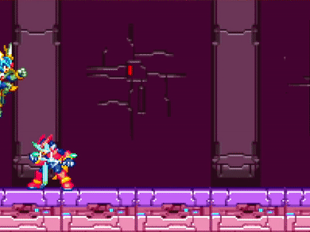

História da Criação de Jogos Online
A história dos jogos online começou nos anos 1970 e 1980, com os primeiros experimentos em redes locais. Um dos primeiros foi o Maze War (1974), seguido pelo MUD (1978), um jogo de RPG em texto que permitia vários jogadores interagirem ao mesmo tempo. Esses jogos eram bem simples e rodavam em computadores universitários ou militares.
Nos anos 1990, com a popularização da internet, os jogos online começaram a se expandir. Surgiram títulos como Diablo (1996), Ultima Online (1997) e StarCraft (1998), que permitiam que os jogadores se conectassem pela internet e jogassem uns contra os outros. Foi também nessa época que nasceu o gênero MMORPG (jogos de interpretação de papéis em massa), com destaque para EverQuest (1999) e Ragnarök Online (2002).
Nos anos 2000, com a chegada da internet banda larga, os jogos online se tornaram muito mais acessíveis e populares. World of Warcraft (2004) se tornou um fenômeno mundial e consolidou os MMORPGs. Ao mesmo tempo, os consoles de videogame como Xbox e PlayStation começaram a oferecer suporte para jogos online, o que ajudou a aumentar ainda mais a quantidade de jogadores conectados.
A partir dos anos 2010, os jogos online passaram por uma nova revolução com a chegada dos smartphones e das redes sociais. Jogos como League of Legends, Minecraft, Fortnite, Free Fire e Among Us alcançaram milhões de jogadores ao redor do mundo. O crescimento dos eSports (competições de jogos) e das plataformas de streaming como Twitch e YouTube Gaming também transformaram os jogos online em uma forma de entretenimento global e até uma profissão para alguns.
Atualmente, os jogos online fazem parte da vida de milhões de pessoas, permitindo diversão, competição e interação social em escala mundial.
Jogos 2D
O impacto dos jogos 2D
Os jogos 2D foram essenciais para o crescimento da indústria dos videogames, marcando sucesso nos anos 1980 com títulos como Super Mario Bros. e Mega Man. Lançado em 1987, Mega Man se destacou pelas fases não-lineares e pelas habilidades adquiridas dos chefes, influenciando muitos jogos futuros. Esses títulos ajudaram a popularizar os consoles e estabelecer gêneros como plataforma e ação.
A continuidade dos jogos 2D
Mesmo com o avanço do 3D, os jogos 2D continuam populares, especialmente entre os estúdios independentes. Títulos modernos como Celeste e Hollow Knight mostram que a simplicidade dos gráficos não impede a criação de experiências profundas e inovadoras. A arte e a jogabilidade dos jogos 2D continuam a capturar a atenção dos jogadores, provando que criatividade vale mais que gráficos avançados.
Jogos 3D
A ascensão dos jogos 3D
Os jogos 3D começaram a se destacar nos anos 1990 com consoles como o PlayStation e Nintendo 64. Eles permitiram ambientes mais imersivos e liberdade de movimento, diferente dos 2D. Jogos como Super Mario 64 e Tomb Raider revolucionaram a jogabilidade e influenciaram toda a indústria. Com o avanço da tecnologia, os gráficos 3D ficaram mais realistas e populares. Hoje, dominam o mercado, mas os jogos 2D ainda seguem relevantes, principalmente entre os desenvolvedores independentes.
A importância dos jogos 3D na atualidade
Atualmente, os jogos 3D são padrão em grandes produções, oferecendo experiências mais cinematográficas e interativas. Eles são usados em diversos gêneros, como aventura, ação e mundo aberto. Além disso, ajudaram a aproximar os games do cinema e da arte digital, mostrando como a evolução gráfica ampliou as possibilidades criativas dos desenvolvedores.